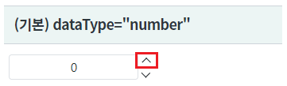
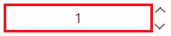
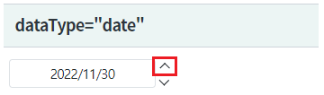
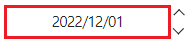
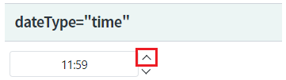
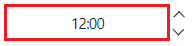
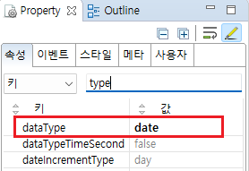
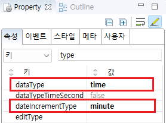

컴포넌트의 속성 dataType의 설정 값에 따른 비교 예제입니다. 속성 dataType의 설정 값에 따른 기능은 아래와 같습니다.
dataType="number" : 숫자형 데이터의 증감 사용
dataType="date" : 날짜형 데이터의 증감 사용.
증감 유형 : 연, 연월, 연월일, 연월일시, 연월일시분
dataType="time" : 시간형 데이터의 증감 사용.
증감 유형 : 시분, 시분초
(기본 설정) 숫자형 데이터의 증감 기능
날짜형 데이터의 증감 기능
시간형 데이터의 증감 기능
컴포넌트 우측에 구성된 버튼을 클릭하여 데이터의 증감을 확인합니다.
영역 [(기본) dataType="number"]의 Spinner의 증가 버튼을 클릭합니다.
[브라우저(Chrome) 실행 예시]

값이 1 증가합니다.
[브라우저(Chrome) 실행 예시]

영역 [dataType="date"]의 Spinner의 증가 버튼을 클릭합니다.
[브라우저(Chrome) 실행 예시]

값이 1일 증가합니다.
[브라우저(Chrome) 실행 예시]

영역 [dataType="time"]의 Spinner의 증가 버튼을 클릭합니다.
[브라우저(Chrome) 실행 예시]

값이 1분 증가합니다.
[브라우저(Chrome) 실행 예시]

속성을 지정합니다.
[필수] dataType="date" //데이터 타입을 날짜형으로 지정합니다.
[선택] dateIncrementType="day" //증감 단위를 지정합니다. 기본 설정값은 day(일 단위)입니다.
그림 1.웹스퀘어5 SP5 스튜디오의 Property View(속성창) 예시

[소스 코드 예시]
<!-- spinner의 소스 본문 예시 --> <w2:spinner dataType="date" id="spi_exam2"> </w2:spinner>
속성을 지정합니다.
[필수] dataType="time" //데이터 타입을 시간형으로 지정합니다.
[필수] dateIncrementType="minute" //증감 단위를 분 단위로 지정합니다.
그림 2.웹스퀘어5 SP5 스튜디오의 Property View(속성창) 예시

[소스 코드 예시]
<!-- spinner의 소스 본문 예시 --> <w2:spinner dataType="time" dateIncrementType="minute" id="spi_exam3"> </w2:spinner>
dataType
dateIncrementType
dataTypeTimeSecond
[웹스퀘어5 SP5 개발 가이드] Spinner
링크 : https://docs1.inswave.com/sp5_user_guide/8df43d1f59fab704#42ddf8532ad343b6